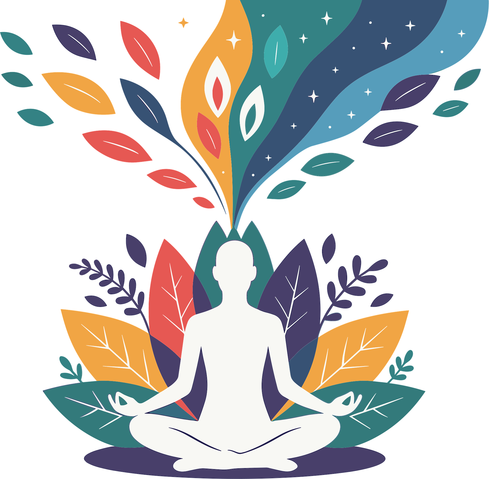

Breathing Techniques
Practical exercises to calm your nervous system.
5 pages • Beginner
On demand
Practical exercises to calm your nervous system.
Short practices and thought tools to reduce overwhelm.
Routines and practices to improve restorative sleep.
A quick 3-minute grounding you can do anywhere.